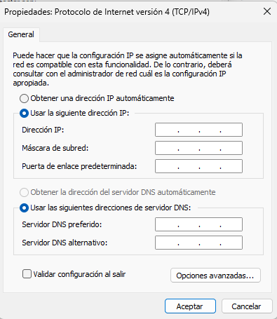
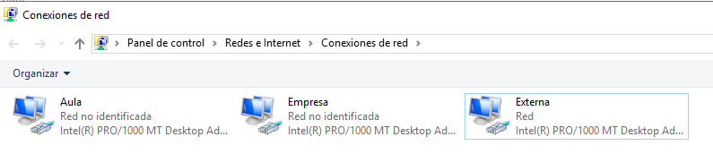

Apéndice A. Recordatorio de red
Una cosa es entender la red en clase y otra muy distinta configurarla en una máquina real cuando algo no responde. Este apéndice es una hoja de consulta para cuando eso pasa: qué significa cada parámetro, dónde se configura en Windows y cómo comprobar, paso a paso, dónde está el fallo.
Los cuatro parámetros
Para hablar con otros equipos, cada dispositivo necesita cuatro datos. Si uno falla, la red falla de una forma muy concreta.


| Parámetro | Qué es | Analogía | Si está mal |
|---|---|---|---|
| Dirección IP | Identificador del equipo en la red | La dirección postal de tu casa | No te encuentran, o chocas con otro equipo |
| Máscara de subred | Qué parte de la IP es «la calle» (red) y cuál «el número» (equipo) | Saber qué direcciones son de tu calle | Ves a equipos que no son de tu red, o no ves a los que sí |
| Puerta de enlace | Por dónde se sale a otras redes | La salida del edificio hacia la calle | Funciona la red local, pero no sales fuera |
| Servidor DNS | Quién traduce nombres a IP | La guía telefónica | Llegas por IP pero no por nombre |
Dirección IP
Es única dentro de su red. En redes locales se usan IP privadas, que no se enrutan por Internet:
| Bloque privado | Rango |
|---|---|
10.0.0.0/8 |
de 10.0.0.0 a 10.255.255.255 |
172.16.0.0/12 |
de 172.16.0.0 a 172.31.255.255 |
192.168.0.0/16 |
de 192.168.0.0 a 192.168.255.255 |
Máscara de subred
Decide quién está en tu misma red. La más habitual en redes pequeñas es 255.255.255.0 (también escrita /24), que permite hasta 254 equipos en la misma red.
| Equipo A | Equipo B | Máscara | ¿Misma red? |
|---|---|---|---|
192.168.1.10 |
192.168.1.20 |
255.255.255.0 |
Sí. Se hablan directamente |
192.168.1.10 |
192.168.2.10 |
255.255.255.0 |
No. Necesitan un router entre ellos |
La máscara debe coincidir
Dos equipos de la misma red con máscaras distintas calculan de forma diferente quién es vecino, y se producen fallos difíciles de explicar.
Puerta de enlace
Es la IP del dispositivo, normalmente un router, al que el equipo envía todo lo que no es de su red. Debe estar en la misma red que el equipo.
Sin puerta de enlace, sin salida
Dejar la puerta de enlace en blanco impide al equipo comunicarse fuera de su red. Se usa a propósito en equipos que no deben salir a Internet, pero ten en cuenta que también impide alcanzar otras redes internas.
Servidor DNS
Traduce nombres (www.ejemplo.com, servidor01) a direcciones IP. Quién sea el DNS cambia según el entorno:
- Red doméstica o equipo suelto: el router o un DNS público (por ejemplo, el de Google,
8.8.8.8). - Equipo de un dominio: siempre el controlador de dominio. Un DNS público no sabe nada de los nombres internos y el equipo no encontrará el dominio.
Dónde se configura en Windows
- Windows + R →
ncpa.cpl. - Clic derecho sobre el adaptador → Propiedades.
- Protocolo de Internet versión 4 (TCP/IPv4) → Propiedades.


Hay dos modos:
| Modo | Cómo funciona | Cuándo usarlo |
|---|---|---|
| Automático (DHCP) | Un servidor reparte la configuración | Equipos cliente |
| Manual (IP estática) | Tú indicas los cuatro valores | Servidores, routers e impresoras de red |
Por qué los servidores llevan IP fija
Otros equipos buscan al servidor siempre en la misma dirección. Si cambiara, dejarían de encontrarlo.
Ver la configuración actual
Desde un símbolo del sistema:
| Comando | Para qué |
|---|---|
ipconfig |
Resumen de IP, máscara y puerta de enlace |
ipconfig /all |
Todo: DNS, MAC, si hay DHCP, etc. |
ipconfig /release y ipconfig /renew |
Soltar y pedir de nuevo la configuración por DHCP |
route print |
Tabla de rutas del equipo |
La dirección 169.254.x.x
Si un equipo con DHCP muestra una IP que empieza por 169.254, no ha recibido configuración: se ha asignado una por su cuenta. Revisa la conexión y el servidor DHCP.
Probar paso a paso
Cuando algo falla, hay que comprobar de cerca a lejos. Cada prueba descarta una causa.
| # | Prueba | Qué descarta si funciona | Si falla, mira… |
|---|---|---|---|
| 1 | ping 127.0.0.1 |
La pila de red del propio equipo | Es muy raro: problema del sistema |
| 2 | ping <mi propia IP> |
Que la IP esté bien asignada | ipconfig /all |
| 3 | ping <puerta de enlace> |
Cable, red virtual y red local | Cable, adaptador de VirtualBox, IP y máscara |
| 4 | ping 8.8.8.8 |
Que se sale a Internet por IP | Puerta de enlace y enrutamiento |
| 5 | ping www.google.com |
Que el DNS resuelve | Servidor DNS |
| 6 | nslookup <nombre> |
Qué responde exactamente el DNS | Servidor DNS configurado |
| 7 | tracert 8.8.8.8 |
Por qué saltos pasa el tráfico | Dónde se corta el camino |
El firewall también «responde»
Un equipo con el firewall de Windows activo no contesta al ping por defecto, aunque la red esté perfecta. Antes de dar la red por rota, comprueba que la regla de eco ICMPv4 está habilitada en el equipo de destino.
Red sin dominio y red con dominio
Los cuatro parámetros son los mismos; lo que cambia es quién es el DNS y de dónde salen los usuarios.
Red doméstica (sin dominio)
| Parámetro | Valor de ejemplo | Explicación |
|---|---|---|
| IP | 192.168.1.10 |
Única para cada equipo |
| Máscara | 255.255.255.0 |
Define quién es de la misma red |
| Puerta de enlace | 192.168.1.1 |
El router |
| DNS | 8.8.8.8 o el router |
Resuelve nombres de Internet |
Cada equipo gestiona sus propios usuarios.
Red con dominio
| Parámetro | Valor de ejemplo | Explicación |
|---|---|---|
| IP | 192.168.1.50 |
Única para cada equipo |
| Máscara | 255.255.255.0 |
La misma que el resto |
| Puerta de enlace | 192.168.1.1 |
El dispositivo que enruta fuera de la red |
| DNS | 192.168.1.10 |
El controlador de dominio, que conoce los nombres internos |
Los usuarios los gestiona el controlador de dominio.
La regla del DNS en un dominio
Un equipo de dominio con un DNS público no encuentra el dominio. El controlador de dominio resuelve los nombres internos y reenvía los de Internet.
Errores de configuración más frecuentes
| Síntoma | Causa probable |
|---|---|
| Mensaje de «conflicto de dirección IP» | Otro equipo tiene la misma IP |
| Se ve la red local pero no Internet | Falta la puerta de enlace, o está mal |
| Se llega a Internet por IP, pero no por nombre | DNS incorrecto |
| No se ve a ciertos equipos de «mi» red | Máscaras distintas o IP de otro rango |
IP 169.254.x.x |
No hay DHCP o no responde |
| El equipo no encuentra el dominio | DNS apuntando a un servidor público |
| Conectividad errática con varias tarjetas | Más de una puerta de enlace |
| Falla todo después de cambiar de red virtual en VirtualBox | Adaptador en otro modo o con otro nombre de red |
Planificar el direccionamiento
Antes de configurar equipos, conviene reservar rangos para que la red esté ordenada. Una pauta habitual en una red /24:
| Rango | Uso |
|---|---|
.1 a .20 |
Infraestructura (router, servidores, switches) |
.21 a .199 |
Equipos de usuario |
.200 a .254 |
Periféricos (impresoras, etc.) |
Y para cada dispositivo, apuntar los cuatro datos en una tabla:
| Dispositivo | IP | Máscara | Puerta de enlace | DNS |
|---|---|---|---|---|
Dibuja la red
Un diagrama (con draw.io, por ejemplo) con cada equipo, su IP y quién es la puerta de enlace evita muchos errores. Cómo documentarlo está en el apartado de documentación de la UD06.
Lista de comprobación antes de configurar un equipo
- [ ] ¿A qué red va conectado (físicamente o en VirtualBox)?
- [ ] ¿Qué IP libre le corresponde, dentro del rango?
- [ ] ¿Cuál es la máscara de esa red?
- [ ] ¿Cuál es la puerta de enlace, o no debe tener?
- [ ] ¿Quién es su DNS? ¿Es un equipo de dominio?
- [ ] Después de configurar: ¿he hecho las pruebas de cerca a lejos?
Resumen
- Cuatro parámetros: IP, máscara, puerta de enlace y DNS. Cada uno tiene su síntoma cuando falla.
- Los servidores llevan IP estática; los clientes, normalmente DHCP.
- En un dominio, el DNS de los equipos es el controlador de dominio.
- Se diagnostica de cerca a lejos: el equipo, la puerta de enlace, Internet por IP, Internet por nombre.
- La IP
169.254.x.xsignifica que no ha llegado la configuración automática. - El firewall también puede hacer que un equipo «no responda» sin que la red esté rota.